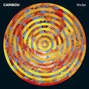
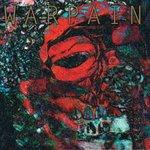
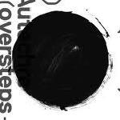

Top 50 Albums of 2010 (Part One)
Was 2010 a great year for music? Was it really? The usual procedure for these introductory statements is to say that it was, mention a few defining trends, and then simply get on with the list itself. But I feel a need to voice my dissatisfaction with the class of 2010. I only managed to scrape together a top fifteen for my end of year list, the first time that's happened since I started compiling the damn things as a nerdy teenager. Personal circumstances prevented me from digesting a lot of new releases in the summer, I'll admit, but when I tried to catch up in the last few months I got the sense I didn't miss a great deal, especially from debut acts. That said, there are a clutch of records from the last 12 months that I will carry with me into the future and these records stand shoulder to shoulder with anything from the last decade. Thankfully the No Ripcord staff managed to agree on most of these and they are dotted throughout the list. And I must say that while it wasn't exactly a vintage year, I am still very pleased with the strength of this Top 50. I hope you enjoy reading it as much as we all enjoyed putting it together. Happy holidays and see you in 2011. -- David Coleman, Editor-In-Chief
[To jump straight to the Top 25 please click here]
. . .
 50. The Morning Benders
50. The Morning Benders
“Big Echo”
(Rough Trade)
Original Review
Promises is quite possible the best song of the year, period... so that alone should provoke a listen to the rest of what this Berkeley foursome has to offer. With a name like Grizzly Bear’s Chris Taylor in tow (he co-produces) giving the band some street cred and discernable direction, Big Echo has effectively put these guys on the map. (Andy Pareti)
49. Local Natives
“Gorilla Manor”
(Frenchkiss)
Call it bad timing, but Local Natives came at a time when it became fashionable to grow beards, wear checkered lumberjack hats, and accessorize on everything rustic. But none of these hacks sound as lively as Local Natives, who’ve achieved a playful collection of hummable melodies that never fail to quench your thirst. While bands like Grizzly Bear and Fleet Foxes carry mournful excursions to the deepest parts of the soul, the Los Angeles bands' joyful canticles and prominent afro-beats are meant to tickle your funny bone. Maybe they were unfairly missed on the shuffle, but Gorilla Manor’s life-affirming anthems are handled with a surprisingly indelible ease. These young lads definitely carry the youthful torch with poise. (Juan Edgardo Rodriguez)
 48. Black Mountain
48. Black Mountain
“Wilderness Heart”
(Jagjaguwar)
Original Review
The epic Wucan aside, I wasn't exactly blown away by Black Mountain's last release. In spite of Sean Caldwell's glowing review of the Vancouver outfit's latest release, Wilderness Heart, I approached it with a begrudging sense of duty rather than genuine excitement. What I found, however, completely blew my modest expectations out of the water. Wilderness Heart is a thrilling distillation of the Black Mountain's best elements. In the space of three memorable tracks the band delivers ethereal psych (Radiant Hearts), Sabbath-esque riffing (Rollercoaster), and even classic metal (Let Spirits Ride). You'd expect it to be all over the place, but thankfully Wildnerness Heart has a consistent uniting element - its overwhelming sense of fun. (David Coleman)
47. The Gaslight Anthem
“American Slang”
(SideOneDummy)
The Gaslight Anthem are clearly getting a touch nostalgic. Their first shot at anthemic stadia rock, third LP American Slang, has proved a damn good vehicle for this. Songs like Old Haunts, The Boxer and We Did It When We Were Young are part of this trend and in the summative final line Brian Fallon admits “I am older now / And we did it when we were young”. It seems appropriate then that they’ve matured having taken some advice from the big man himself (neither Bono nor God); and this is certainly not far from Springsteen c. 1984 – listen to Bring it On if you need convincing. And amidst the current maelstrom of 80s synth-pop revival, this short but unified record has cemented them one of the best guitars & drums four-pieces around. It’s a lovely twist of irony then that American Slang is their very own 80s throwback, and right now theirs is welcome, why? Because it’s just good ol’ fashioned Rock ‘n’ Roll. (Joe Iliff)
 46. Yeasayer
46. Yeasayer
“Odd Blood”
(Secretly Canadian)
Original Review
Occasionally a song will come along that is so sonically flawless, that short of the artists responsible declaring their forthright love for Hitler’s policies, committing mass murder, or worse, selling their music to Starbucks – you will forgive them for almost anything. Sometimes an artist is lucky enough to create one of these aural masterpieces in their entire career. And then there’s Yeasayer, who have produced two of these career-defining tracks (Ambling Alp and O.N.E.) in a single album. God bless ‘em. Odd Blood was the result of a massive acid trip in New Zealand; which of course explains why the record is so damn good. The album is bathed in the preternatural sunny hedonism that recalls The Beach Boys’ Pet Sounds or for the more contemporary-inclined, Animal Collective’s Merriweather Post Pavilion. Dangerously addictive and lyrically deep; Odd Blood delivers on all levels. (Lukas Clark-Memler)
45. Caribou
“Swin”
(Merge)
Original Review
Swim proves that Dan Snaith is one hell of a genre hopper. The man’s explored it all, shoegaze, rock, pop, IDM, and now house and chillwave. It’s a delightfully easy listen, with moments that perfectly combine experimental dance music with unique lyrical insight. It has numerous songs that are the kind where you just sit back and think “damn, that’s just really cool.” Bowls is the shining example of that, with its intertwining percussive and melodic sections. It also translates exceptionally well to the live stage, getting the crowd going far faster and far more than anyone would expect. (Andrew Baer)
44. The Books
“The Way Out”
(Temporary Residence)
The Books, resident sound collage experts, have always produced invigorating music. The Way Out is no exception — this is bold and brilliant; it’s always moving on that eclectic, lush path toward something unexpected. New samples abound in the band’s ever-growing sound catalog, and never for a moment does a track feel like a repeat of something you’ve heard before. Don’t worry, this is sound collage with a very keen eye firmly planted on the musical — it’s not noisy collage nonsense. When the band kicks in with their own contributions, typically in the form of vocals, the whole outing just shimmers. The Books have always been stand-out artists; The Way Out is further proof that they’re not just cutting and pasting — they’re creating. (Matt Montgomery)
43. Marnie Stern
“Marnie Stern”
(Kill Rock Stars)
With Marnie Stern’s self-titled third album, her usually high level of dazzling and technical six-string proficiency rides shotgun next to her emotional baggage. Though still composing her wildly dexterous guitar licks with beat machine, Zach Hill, Stern’s typically upbeat flavor takes an introspective turn, her first song a tribute to a deceased ex-boyfriend (For Ash), and another conveying a morose sense of self-reflection (Transparency Is The New Mystery). As Stern continues to prove her worth as a musician, songs like Risky Biz and Female Guitar Players Are The New Black continuing her grand tradition of unique pop music alterations and song structure, we’re happy this time to get a glimpse of her soul and respond without hesitation, “You ARE enough.” (Sean Caldwell)
42. Girl Talk
“All Day”
(Illegal Art)
Original Review
No artist embraces the entirety of the Western popular music canon quite so completely as mashup artist Gregg Gillis, aka Girl Talk. Over the span of five albums and eight years, he's made a name for himself as the world's greatest plunderphonic, cramming the highlights of twenty different singles into one 5-minute track. At this point, pointing out his stylistic developments from album to album - such as All Day's shift to include more hard rock, with appearances from Black Sabbath, Nirvana and Van Halen - seems pedantic; there's enough spot-the-influence to put a smile on any music lover's face. A brief sample of All Day's choicest mashups: Missy Elliott over the Ramones, Rihanna over Fugazi, Big Boi over Portishead, Ludacris over Phoenix, a three-way mash-up of Daft Punk, Rage Against The Machine and M.I.A., and, best of all, Jay-Z over Modern English. (Michael Skinnider)
 41. Abe Vigoda
41. Abe Vigoda
"Crush”
(Bella Union)
Original Review
Abe Vigoda’s sound in the steamy jungles of Skeleton always had a certain streamlined ethic to them, banging out jangle-punk slabs in 2-minutes or less. So it shouldn’t be surprising that they had a bit of New Order in them. Crush abandons the guitar-heavy assault of their previous work and adopts a synthed-up songwriting mystique that has the band sounding less like scene-subversives and more like thought-out musicians. The band exploited a deep creative recess, which is something a blog-band scarcely pulls off. (Luke Winkie)
40. Warpaint
“The Fool”
(Rough Trade)
Original Review
Proof that good things come to those who wait, Warpaint released their debut album in 2010, a full six years after forming. That gestation period makes more sense upon listening to The Fool, with its cautious approach to songs, letting them build at their own speed and never hurrying unnecessarily. Warpaint channel the spirit of Cocteau Twins and shoegaze of the early 90s before throwing in a little California sun to create a sound that’s as hypnotic as it is irresistible. Tracks like Undertow are liable to envelop your mind and swirl around your head for days and for good reason, Warpaint have perfected the art of the cleverly written song that can get under your skin. Let’s just hope it doesn’t take them until 2016 to produce a follow-up. (Joe Rivers)
 39. Menomena
39. Menomena
“Mines”
(Barsuk)
Original Review
Less like the rock collages they’ve thrown together in the past, Menomena’s latest album, Mines, was more quiet and direct though still prone to bouts of sound exploration (BOTE, Five Little Rooms). While not necessarily on par with I Am The Fun Blame Monster! or Friend And Foe, Mines ably showcases a band at one with subtlety and song craft, their melodies a defining characteristic that’s reliably engaging and beautifully married to their thick bass rhythms, sax exhalations and piano loops. (Sean Caldwell)
 38. Gil Scott-Heron
38. Gil Scott-Heron
“I'm New Here”
(XL)
Original Review
A textbook example of executing a spoken word record masterfully, Gil Scott-Heron comes back after sixteen years to recapitulate another chapter in his life. Why should we pay attention? Well, Scott-Heron’s deep voice commands your ear buds, perceptively recounting his upbringing while honoring the strong female forces that humbly surrounded his past. Though its common tales on adversity may strike as familiar, Scott-Heron brashly speaks to us with such honesty that it’s hard to look away. With a little help from his friends, the left-field production is top notch: an atmospheric barrage of minimal sonics and classic orchestral compositions are detailed to perfection. I’m New Here is the result of a class-act talent bearing his all, resurging back from the shadows with a newfound transparency. (Juan Edgardo Rodriguez)
37. Grinderman
“Grinderman 2”
(Anti)
Original Review
People need to remember that this is a side project, an experiment if you will, a somewhat jovial voyage into said experimentation and a means to kick back and escape the heavy weight, constraints and expectations of life in the Bad Seeds. Furthermore, it was written and recorded in a week with no material being previously written. This later part is integral to appreciating the album, the band’s members now so in sync and sonically aligned with one another that they are able to essentially toss out an album like this. Cave & Ellis’ bond has clearly gone beyond what he shared with Mick Harvey - they seem to not only relish in one another’s company but perpetually flourish - challenging and complementing one another in equal measure. The album albeit recorded in the same manner as the first has taken on an undeniable development, a subtlety and maturing song craft to it, which considering the method it was made by, is truly astonishing and you would think impossible to achieve. What they achieved in one week is a lifelong unattainable feat for some bands. This is an album all about context. (Daniel Dylan Wray)
36. Sleigh Bells
“Treats”
(N.E.E.T)
Original Review
Treats is nothing if not unique. It combines childish lyrics about friendship and games with pounding drum machines and loud guitars. Pop meets hardcore meets abstract hip hop. It’s an album that both intrigues and entertains, without ever sounding in the least bit pretentious. And did I mention it’s really loud? Volume doesn’t equate to quality, but it sure kicks ass. In the right moment, it’s just right. Thumping kick drums, screaming guitars and turning it all up to eleven makes for a wonderful forty five minutes. (Andrew Baer)
35. Owen Pallett
“Heartland”
(Domino)
Though Heartland is Pallett's first release since dropping his Final Fantasy moniker, there is no mistaking his unique musical touch. Whereas Pallett previous featured violin (his original instrument), he seems to control an entire orchestra in Heartland as he extensively integrates wind instruments as well. Using his classical composing background, he effectively marries these symphonic instruments with electronic effects and a modern song structure. Heartland is a surprisingly approachable blend of acoustic and electronic, orchestration and pop; never veering too far to either extreme. From the catchy chorus of Lewis Takes Off His Shirt to Pallett's layered vocals on What Do You Think Will Happen Now?, Heartland is a wholly refreshing and interesting album and one of ten short-listed for the 2010 Polaris Music Prize in Canada. (Andrew Davison)
 34. The Besnard Lakes
34. The Besnard Lakes
“The Besnard Lakes Are The Roaring Night”
(Jagjaguwar)
Original Review
The Besnard Lakes are one of those record collectors’ bands. Every note is a name drop, every chord a sly wink to a classic song. It’s hard to be so casually open about your influences without sounding derivative, but this band’s jigsaw puzzle of everything from Pink Floyd space rock to My Bloody Valentine shoegaze to every nerdy prog rock band you won’t admit you love results in a blend that ultimately sounds quite modern. This is album rock at its best, and it deserves a listen from beginning to end every time. (Andy Pareti)
33. Autechre
“Oversteps”
(Warp)
Original Review
For their tenth studio album, Autechre have created a musical vision of a future that could have been pulled from the sepia tone imaginations of yesteryear's sci-fi pulp. Oversteps is electronica that could happily inhabit the world Blade Runner's Deckard. Each track ebbs, flows and jerks like a production line full of sub-circuits and moving parts that combine and contrast with equal relish as the neat and clean spectral delights are tugged at and pulled out of shape by the fizzing, glitching underbelly brooding beneath. Even the silence feels textured in amongst the not-quite-woodwind synth that wheezes on like a pair of struggling lungs belonging to a robot built from a ration of bitrates. Its a sound both futuristic and sterile yet, gritty, flawed and wonderfully imperfect. (Greg Johnson)
 32. Los Campesinos!
32. Los Campesinos!
“Romance Is Boring”
(Wichita)
Original Review
If you are British and between the ages of 15 and 24, Los Campesinos! is your band. You probably just don’t know it yet. They’re middle class, they write songs about boredom; not being good at sex; drinking too much and generally failing at young love – and they’re good at it. That clarified, and to avoid of alienating other demographics, Romance Is Boring also combines manic hooks and wry observations far better than most these days. It’s filled with lines that beg questions, songs that ask you to derive your own meaning from them – but I’d prefer to let you discover those for yourself. In true Los Campesinos! style it presents an intensely detailed, convoluted and dense picture of life and living – without ever giving too much away. And among this is The Sea Is A Good Place To Think Of The Future – a post-rock gem, and an exceptional advert for a worthy British Band. (Joe Iliff)
31. Four Tet
“There Is Love In You”
(Domino)
Original Review
There Is Love In You is less party-ready that its predecessors, which is somewhat surprising given the fact that Kieran Hebden, aka Four Tet, would play the developing tracks to willing clubbers during his stint as a resident DJ in Plastic People in order to gauge their reaction. Nonetheless, the album contains enough propulsion to warrant approving head nods, and it’s the effect of the album's focus that really appeals. For sure, this is Four Tet's most mature album yet, with most songs following a logical, linear pattern and a steady 4/4 beat. Depending on your disposition, this can be a problem, but for those who love Four Tet just for the palpable sense of loveliness, There Is Love In You will undoubtedly be a hit.
 30. Field Music
30. Field Music
“Field Music (Measure)”
(Memphis Industries)
Original Review
As years keep passing by, classic rock purists have had it really bad. The general consensus accepts the timeless legends, but there’s no space for contemporaries who keep pushing the boundaries of smart, melodious rock music. Too superior for mainstream radio, yet too sophisticated for indie listeners, Field Music continue to follow their own path, content on pleasing their most fervent fan base while readily inviting those who want to follow. By definition, Measure should be an overwhelming monster. It’s the complete opposite: the Brewis brothers continue to wield on economic terms like master craftsmen, audaciously tackling a 72-minute double album with hardly a minute wasted. For those who like their rock music to be both studious and heartfelt, Measure is the zenith of art clashing with the popular persuasion. (Juan Edgardo Rodriguez)
29. Cee-Lo Green
“The Lady Killer”
(Elektra)
Original Review
As you almost certainly know, Forget You is the weak, clean substitute version of the viral hit that was Fuck You, a righteous Motown vehicle of defiance, and a perfectly crafted pop song at that. And that’s exactly what you’ll find on this record: neo-soul infused, perfectly crafted pop on a timeless theme – the heartbroken and the heartbreakers – from start to finish. (Joe Iliff)
 28. Vampire Weekend
28. Vampire Weekend
“Contra”
(XL)
Original Review
Contra is grossly underappreciated. I know that Vampire Weekend’s debut was a better record, but hear me out. The hype that surrounded the groups sophomore release was suffocating – the public were expecting something extraordinary, and if Vampire Weekend did not deliver at least an equally admirable second release, they faced industry pariahdom. Most other bands would have been slightly derailed by the hype accompanying their debut and the sheer weight of expectation and pressure heaped onto their second album. But it’s quite clear that Vampire Weekend are not most other bands, and that they play by their own set of rules. Ezra Koenig and his band of educated over-achievers were certainly up to the challenge. Contra is not a better album but it shows a maturity and technical prowess absent from the first. What Mr. Koenig has strived to achieve with Contra is to gain the respect of cynics and sceptics who unfairly dismissed Vampire Weekend's eponymous debut as a over-ambitious imitation of Paul Simon's Graceland, penned by a crew of post-collegiates far too convinced they're clever and quirky, with a presumably superficial understanding of the African sounds they were stealing. But instead of trying to live it down, Vampire Weekend chose instead to live it up. With their affluence and privilege on their sleeve, the band has produced an album that is sonically beautiful and is a step and a half ahead of its younger brother. No, it does not boast the unabashed enthusiasm the former contained, but instead offers a more refined and comprehensive listening experience. There will always be haters and cynics, but based on the success, both critical and commercial, of their first two albums, there doesn't appear to be a tangible limit to what future splendour the boys of Vampire Weekend may achieve. (Lukas Clark-Memler)
27. The Roots
“How I Got Over”
(Def Jam)
Original Review
Hip-hop is a gigantic business, with literally thousands of voices layered over just as many beats, each screaming different messages of various importance and preferences for alcohol. But of all the rap releases this year, The Roots' ninth LP is arguably the one to listen for the most. The release is the prime example of the power of hip-hop: it's catchy, with super tight instrumentation that ranges from standard beats to odes to jazz and funk, it's lyrically relevant and insightful, and it's always on the side of the great struggle against the ties that bind us. Here's your soundtrack for the grind, yo. (Chris Coplan)
 26. Suckers
26. Suckers
“Wild Smile”
(Frenchkiss)
Original Review
Brooklynite quartet Suckers channel Modest Mouse's disco drums and jagged guitar, Arcade Fire's chest-thumping anthems, and Talking Heads' new wave pop sensibilities in their debut full-length, Wild Smile. There's a little more to it than that, though: specifically, African rhythms, falsetto wails, hooky guitar, tribal tom crescendos, Beach Boys vocal harmonies, and mariachi horns. Lead vocalist Quinn Walker could be any shout-yourself-hoarse singer of the past decade (the screaming-into-pickups of Black Sheep makes me think Isaac Brock, but Spencer Krug is another striking analog). It's an album that swings wildly, from slow-burning chant-alongs to Latin-lite country to synth-crazy adrenaline rock – but the focus is always with the ferocious climaxes, moments that boil a lifetime's worth of memories into one singular pronouncement. (Michael Skinnider)
. . .
Click here to read the second and final part of our Top 50 (albums #25 to #1)
15 December, 2010 - 21:23 — No Ripcord Staff